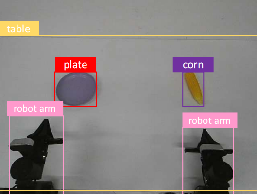
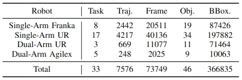

Enhancing the generalization capability of robotic learning to enable robots to operate effectively in diverse, unseen scenes is a fundamental and challenging problem. Existing approaches often depend on pretraining with large-scale data collection, which is labor-intensive and time-consuming, or on semantic data augmentation techniques that necessitate an impractical assumption of flawless upstream object detection in real-world scenarios. In this work, we propose RoboAug, a novel generative data augmentation framework that significantly minimizes the reliance on large-scale pretraining and the perfect visual recognition assumption by requiring only the bounding box annotation of a single image during training. Leveraging this minimal information, RoboAug employs pre-trained generative models for precise semantic data augmentation and integrates a plug-and-play region-contrastive loss to help models focus on task-relevant regions, thereby improving generalization and boosting task success rates. We conduct extensive real-world experiments on three robots, namely UR-5e, AgileX, and Tien Kung 2.0, spanning over 35k rollouts. Empirical results demonstrate that RoboAug significantly outperforms state-of-the-art data augmentation baselines. Specifically, when evaluating generalization capabilities in unseen scenes featuring diverse combinations of backgrounds, distractors, and lighting conditions, our method achieves substantial gains over the baseline without augmentation. The success rates increase from 0.09 to 0.47 on UR-5e, from 0.16 to 0.60 on AgileX, and from 0.19 to 0.67 on Tien Kung 2.0. These results highlight the superior generalization and effectiveness of RoboAug in real-world manipulation tasks.
Overview of RoboAug. RoboAug contains three stages: (1) task-relevant region extraction, (2) semantic data augmentation, and (3) region-contrastive policy learning.
In Step 1, key regions are identified in all videos through a training-free, one-shot matching mechanism that requires only a single manually labeled reference image. Next, these initial annotations are propagated across video frames using integrated segmentation and tracking to generate consistent, dense masks for the entire dataset.
In Step 2, novel background scenes are synthesized in their entirety using a pre-trained generative model, thereby circumventing the visual artifacts typically associated with inpainting techniques. The task-relevant foreground is then composited onto these generated backgrounds, preserving critical structural integrity and massively expanding the training dataset.
In Stage 3, we train the robotic manipulation policy using a plug-and-play region-contrastive loss. This loss function helps the model focus on task-relevant regions while being invariant to irrelevant background variations, thereby improving generalization to unseen scenes and environments.
We introduce RoboAug-D, a large-scale object detection dataset manually annotated from the perspective of robotic manipulators. The dataset encompasses 33 distinct manipulation tasks, comprising a total of 73,749 keyframes and 366,835 bounding boxes across 46 object categories.
Dataset Example
Data Distribution
We evaluated the zero-shot object detection capabilities of Vision Foundation Models (VFMs) on the full test set of the RoboAug-D dataset, with a focus on challenges inherent to robotic manipulation scenarios. Model performance was compared using mean average precision(mAP@0.5), and our proposed approach was benchmarked against the state-of-the-art detection methods GroundingDINO and LLMDet.
We evaluated RoboAug across three robot embodiments (Tien Kung 2.0, Single-Arm UR-5e, and AgileX Cobot Magic 2.0), spanning tasks from single-arm pick-and-place to precise bimanual manipulation. Through over 35,000 real-world trials, we rigorously assess its generalization to unseen scenes with diverse backgrounds, distractors, and lighting conditions.
We evaluated RoboAug under triple-factor variations: 3 unseen backgrounds, 4 lighting conditions, and 3 distractors.
TK2-WeightApple
TK2-LayPlateBowl
TK2-HeatBread
AGX-UprightMug
AGX-PutCornPlate
AGX-CloseDrawerCorn
UR-MoveLemon
UR-OpenDrawerCorn
UR-StoreCarrot
Additionally, we evaluated RoboAug under dual-factor variations: 5 unseen backgrounds and 10 task-irrelevant distractors.
UR-MoveLemon
AGX-StackBowl
UR-PutCornPot
We also evaluated RoboAug under single-factor variations: up to 170 unseen backgrounds, 20 lighting conditions, and up to 10 task-irrelevant distractors.
UR-PutCornPot with 170 Backgrounds
AGX-CloseDrawerCorn with 20 Lighting
UR-StackBowl with 1,3,5,10 Distractors
RoboAug was compared against baseline methods including No Aug, GenAug, Roboengine-T, and Roboengine-G. We selected the best baseline (GenAug) for comparative demonstration videos. Demonstration videos are shown below:
AGX-OpenPotCorn
TK2-CollectBall
UR-StackBowl